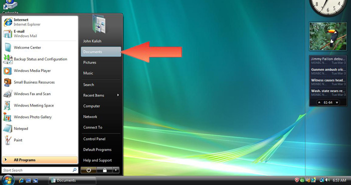
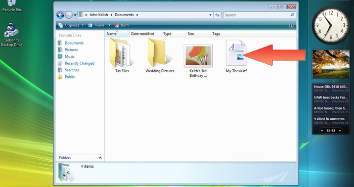
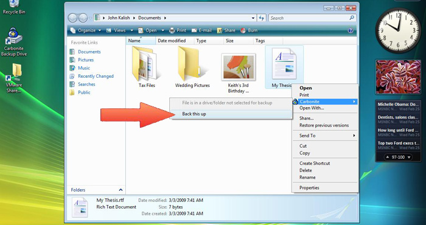
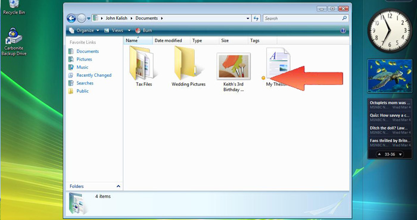
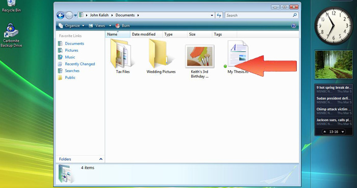
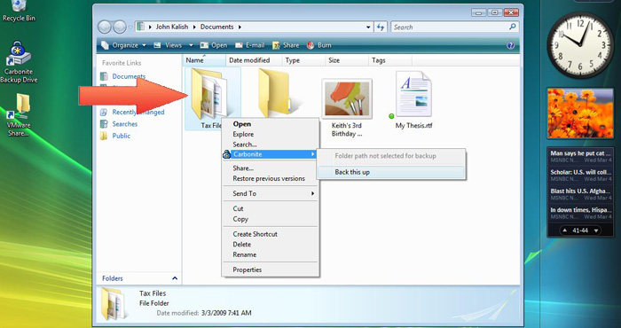

|
Dear Client Online Backup User,
You have not selected files for backup...
You installed Carbonite Online Backup to protect your files in case of a PC catastrophe. However, your files remain unprotected because you haven't selected any for backup. Below are step by step instructions for backing up your files ...
To Select A File for Backup
Step 1.
Find your 'Documents' folder or another folder that holds your files. 

Step 2.
Double-click the folder to open it.
Find the file you'd like to back up. 
Step 3.
Right-click the target file.
Highlight the "Carbonite" menu option.
Select "Back this up". 
Step 4. (Backup Selected)
Your file has been marked for backup. A yellow dot on the icon indicates that the file is waiting to be backed up. 
Step 5. (Backup Complete!)
It may take some time for the backup to complete. Once you see the dot turn green, you'll know that the file has been safely backed up. 
Optional: Back Up An Entire Folder
You can backup ALL the eligible files in a folder by right-clicking the folder instead of a file and selecting "Back this up". 
Optional 2: Back Up by File Type
You can also choose to backup all files of a certain type by right-clicking a file and selecting "Back up files of this type". (For example, here we've selected all JPEG Photographs for backup) 
Congratulations!
If you followed the steps above then you've successfully started backing up files. For more detailed instructions go to our Getting Started Guide or simply head over to your favorite documents folder and continue backing up your PC.
Sincerely,
The Carbonite Online Backup Team
Get it Now!
Subscribe to Carbonite Online Backup for Only $49.95/year
Subscribe Now |
Getting Started
|